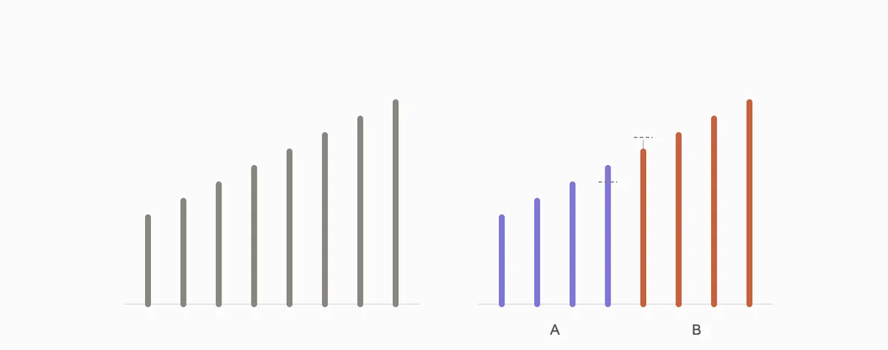

Мозг режет мир надвое, потому что так дешевле
Ты знаешь это состояние: либо делаю идеально, либо не берусь вообще. Либо человек хороший, либо мудак. Либо диета соблюдается, либо один круассан - и день списан, а заодно и неделя.
Середины при этом нет нигде, кроме реальности.
Радуга, которой не существует
Посмотри на радугу. Ты видишь полосы: красная, оранжевая, желтая, дальше по списку. Их там нет.
Физически радуга - непрерывный спектр, длина волны меняется плавно, без единого шва. Полосы появляются в тот момент, когда свет доходит до зрительной системы, и она нарезает спектр на куски.
Это называется категориальным восприятием, и работает оно так: внутри категории различия сжимаются, на границе - растягиваются. Два оттенка кажутся похожими, если оба называются желтым, и заметно разными, если один назван желтым, а другой зеленым. При этом расстояние между ними по спектру одинаковое.
Впервые эффект описали на звуках речи в 1957 году, потом нашли в цвете, в лицах, в музыкальных интервалах, даже в том, как мы различаем формы на ощупь. Это не особенность зрения, это способ работы всей системы.
Ярлык меняет то, что ты видишь
Дальше начинается неприятное.
В 1963 году Анри Тэджфел и Алан Уилкс показали людям восемь вертикальных линий. Лесенка: каждая следующая чуть длиннее предыдущей, шаг между соседними одинаковый. Просили назвать длину каждой в сантиметрах. Никаких мнений, чистое измерение на глаз.
В первом условии линии просто показывали. Оценки получались близкими к реальным: лесенка и есть лесенка.
Во втором условии к четырем коротким линиям приписали букву A, к четырем длинным - букву B. Больше не менялось ничего: те же линии, тот же порядок, тот же шаг.
И картинка поехала. Разрыв между четвертой линией и пятой люди стали видеть значительно больше, чем он есть, оценки разошлись на двадцать-тридцать процентов. При этом линии внутри одной буквы стали казаться похожими друг на друга сильнее, чем они есть.

Между четвертой и пятой физически такой же шаг, как между первой и второй. Буквы не несли никакой информации, экспериментатор приписал их произвольно. Но граница появилась, и на ней возник обрыв, которого нет.
Это называется эффектом акцентуации. И вот что в нем главное: люди не рассуждали о линиях, не имели о них мнения, не оценивали их морально. Они смотрели и называли сантиметры. Ярлык подействовал не на суждение, а на восприятие, то есть раньше, чем человек успел что-то подумать.
Теперь подставь вместо линий человека. Или себя.
Почему мозг так экономит
Причина та же, что в статье про спецификацию, только с другой стороны.
Сортировать по оттенкам дорого. Нужно удерживать шкалу, сравнивать позиции, пересматривать при новых данных. Сортировать на две кучи дешево: свой или чужой, съедобно или нет, опасно или нет. В среде, где решение нужно за полсекунды, дешевая сортировка выигрывает у точной всегда, потому что точная не успевает.
Есть и вторая деталь, которая связывает этот кластер с предыдущим. Чем меньше у человека информации, тем сильнее он опирается на категории. Неопределенность не только заполняется худшим вариантом, она еще и заставляет упрощать. То есть два механизма работают в паре: сначала не хватает данных, потом то немногое, что есть, схлопывается в две кучи.
Формула кластера: непрерывное режется надвое, и промежуток перестает существовать. Четыре ловушки ниже - это одна операция на разном материале.
Четыре ловушки этого кластера
1. Черно-белое мышление. Шкала схлопывается в два полюса
Как выглядит изнутри. Есть только идеально и ужасно. Промежуток не то чтобы отвергается, его просто не видно, как не видно полос между цветами радуги. Сделано на семьдесят процентов - это не "неплохо", это "провалено".
Пример. Ты решила начать бегать три раза в неделю. Пробежала два раза, на третий пошел дождь. К вечеру формулировка уже не "две пробежки из трех", а "я опять не смогла".
Когда это не ловушка. Когда шкалы действительно нет. Договор либо подписан, либо нет. Самолет либо взлетел, либо не взлетел. Некоторые вещи бинарны по устройству, и притворяться, что там есть оттенки, - отдельный способ себя обманывать.
Что делать. Верни шкалу физически: назови процент. Не "провалила", а "сделала на семьдесят". Цифра работает лучше уговоров, потому что ее нельзя произнести, оставаясь в двух полюсах. Второй вопрос, если процент не считается: что было бы четверкой из десяти, а что восьмеркой?
2. Ложная дилемма. Из многих вариантов остаются два
Как выглядит изнутри. Похоже на предыдущую, но здесь схлопывается не оценка, а выбор. Либо терплю эту работу, либо увольняюсь в никуда. Либо молчу, либо иду на конфликт. Третьего не видно, и кажется, что его нет.
Пример. Тебя не устраивает распределение задач в команде. В голове два варианта: смириться или писать заявление. Между ними лежит десяток шагов, которые даже не рассматриваются: поговорить с руководителем, попросить перераспределить одну конкретную задачу, взять другой проект, подождать конца квартала.
Когда это не ловушка. Когда вариантов действительно два, и ты их проверила. Такое бывает: сроки, деньги, чужое решение. Дилемма становится ложной не от того, что вариантов мало, а от того, что их не искали.
Что делать. Заставь себя выписать третий вариант. Не хороший, любой. Обычно после третьего появляется четвертый, а к пятому исходная пара перестает выглядеть исчерпывающей. Полезный вопрос: что бы сделал человек, которому эта ситуация безразлична?
3. Навешивание ярлыков. Поступок становится сортом человека
Как выглядит изнутри. Было действие, стало определение. Не "я забыла отправить письмо", а "я безответственная". Не "он повысил голос", а "он мудак". Ярлык удобен тем, что закрывает вопрос: с определением ничего делать не надо, оно просто есть.
Пример. Ты опоздала на встречу. Опоздание - событие, у него есть причина и последствие, с ним можно что-то сделать. "Я вечно всех подвожу" - это уже свойство, и оно не чинится, потому что чинить нечего, это же ты.
Когда это не ловушка. Когда за ярлыком стоит устойчивое поведение, а не эпизод. Человек, который врал тебе десять раз, - не "однажды сказал неправду". Обобщение здесь опирается на данные, а не заменяет их.
Что делать. Верни глагол вместо существительного. "Я безответственная" превращается в "я забыла отправить письмо". Разница не косметическая: у глагола есть время, место и причина, у существительного нет ничего, кроме приговора. И вспомни линии: ярлык меняет то, что ты видишь, а не только то, как ты об этом говоришь.
4. Сверхобобщение. Один случай становится категорией
Как выглядит изнутри. Событие произошло один раз, но описывается словами "всегда", "никогда", "вечно", "все". Категория создается из единственного примера и дальше работает как правило.
Пример. Один неудачный разговор с новым коллективом превращается в "я не умею сходиться с людьми". Дальше это уже не наблюдение, а фильтр: следующие знакомства проходят через него, и подтверждения находятся легко.
Когда это не ловушка. Когда "всегда" подтверждается счетом. Если ты пять лет подряд бросаешь спорт на третьей неделе, это не сверхобобщение, это статистика, и с ней стоит считаться.
Что делать. Поймай слово-маркер. "Всегда", "никогда", "вечно", "опять" - каждое из них требует пересчета. Сколько раз на самом деле? Обычно выясняется, что "вечно" означает три случая за два года, а "никогда" - что один раз не получилось.
Что у них общего
Четыре названия, одна операция.
Черно-белое мышление схлопывает оценку. Ложная дилемма схлопывает выбор. Ярлык схлопывает человека до одного свойства. Сверхобобщение схлопывает время: один случай начинает описывать все случаи.
Каждый раз происходит одно и то же. Непрерывная величина заменяется двумя категориями, промежуток исчезает, а граница между категориями раздувается. Ровно то, что случилось с линиями, когда к ним приписали буквы.
И главное следствие, которое стоит держать в голове: с этим бесполезно спорить содержанием. Убедить себя, что ты не безответственная, почти невозможно, потому что ярлык уже изменил то, что ты видишь, и подтверждения находятся мгновенно. Работает другое - не оспаривать категорию, а вернуть шкалу, на которой ее не было.
Что делать: возвращать шкалу
Четыре приема, все про одно.
Назвать число. Процент, балл, счет случаев. Число невозможно произнести из двух полюсов, оно само по себе создает шкалу. "Сделано на семьдесят" и "провалила" описывают одно событие, но первое допускает продолжение.
Найти третий вариант. Не лучший, любой. Задача не выбрать его, а разрушить пару. Как только вариантов три, обнаруживается, что их на самом деле восемь.
Поменять существительное на глагол. Свойство превращается в действие, приговор в эпизод. "Он мудак" - конец разговора. "Он повысил голос на совещании" - начало.
Пересчитать "всегда". Слова-маркеры проверяются арифметикой, и арифметика почти всегда на твоей стороне.
И отдельно - про то, где категории полезны. Инженер, который делит детали на "годные" и "брак", не попадает в ловушку, он экономит время там, где оттенки не нужны. Разница в том, что у него есть допуск: заранее известная граница, по которой проходит деление, и она записана, а не появилась сама. Ловушка начинается там, где граница возникает произвольно, как буквы A и B на линиях, и дальше начинает управлять тем, что ты видишь.
Продолжение: У твоего мозга двойная бухгалтерия - третий кластер, о том, почему приход и расход считаются в разных валютах.
Источники
- Tajfel H., Wilkes A.L. Classification and quantitative judgement. British Journal of Psychology, 1963.
- Liberman A.M., Harris K.S., Hoffman H.S., Griffith B.C. The discrimination of speech sounds within and across phoneme boundaries. Journal of Experimental Psychology, 1957.
- Corneille O., Klein O., Lambert S., Judd C.M. On the role of familiarity with units of measurement in categorical accentuation: Tajfel and Wilkes (1963) revisited and replicated. Psychological Science, 2002.